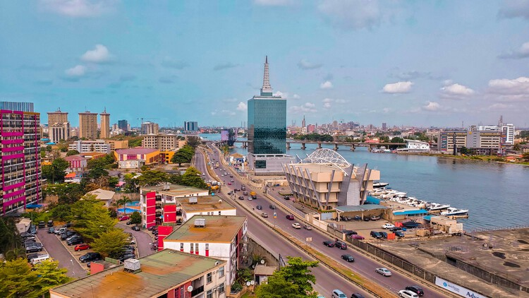
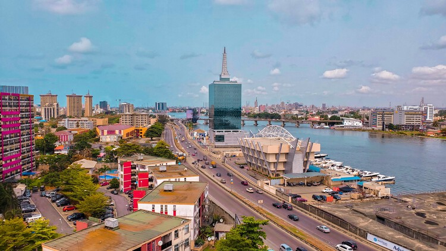

Olumo rock
Olumo rock está localizado na cidade de Abeokuta, no estado de Ogun. Abeokuta 'é um nome que significa' Under the Rock '. A cidade em si possui um considerável depósito de enormes montanhas rochosas, mas a mais emocionante de todas é a de Olumo.
Parque Nacional Yankari
Parque Nacional Yankari é um dos destinos mais populares para turistas na Nigéria, é um parque de caça raro.
Muitas das espécies ameaçadas de animais mal encontradas em qualquer lugar do país ainda existem no Parque Nacional Yankari. Tem animais que sequer parecem reais. O maravilhoso de toda a história é a maneira como esses animais são mantidos e tratados em grande número como se nunca fossem animais selvagens.
Cachoeira da cidade de Arochukwu
É um dos melhores lugares para turismo. Existem cavernas, cachoeiras e muitas vistas maravilhas da natureza e estruturas alucinantes de heranças do país.
Bosque Sagrado de Osun
Bosque Sagrado de Osun, onde se referem a esse bosque como o berço das tradições culturais iorubás. A densa floresta do Bosque Sagrado de Osun é um dos últimos remanescentes da floresta alta primária no sul da Nigéria. Definitivamente é um lugar a se visitar na Nigéria: ele contém as esculturas de madeira mais extraordinárias que surpreendem.
Lagos
Localizada ao Sudoeste do país, Lagos possui muitas ilhas ao redor da lagoa de Lagos. A cidade é rica em música e referência em vida noturna, dispondo de diversas atrações turísticas. Na ilha de Lagos é possível visitar a Catedral de Cristo (CMS), o Museu Nacional, o Glover Memorial Hall, diversos mercados atacadistas, o Palácio de Oba e a Mesquita Central de Lagos.


 
